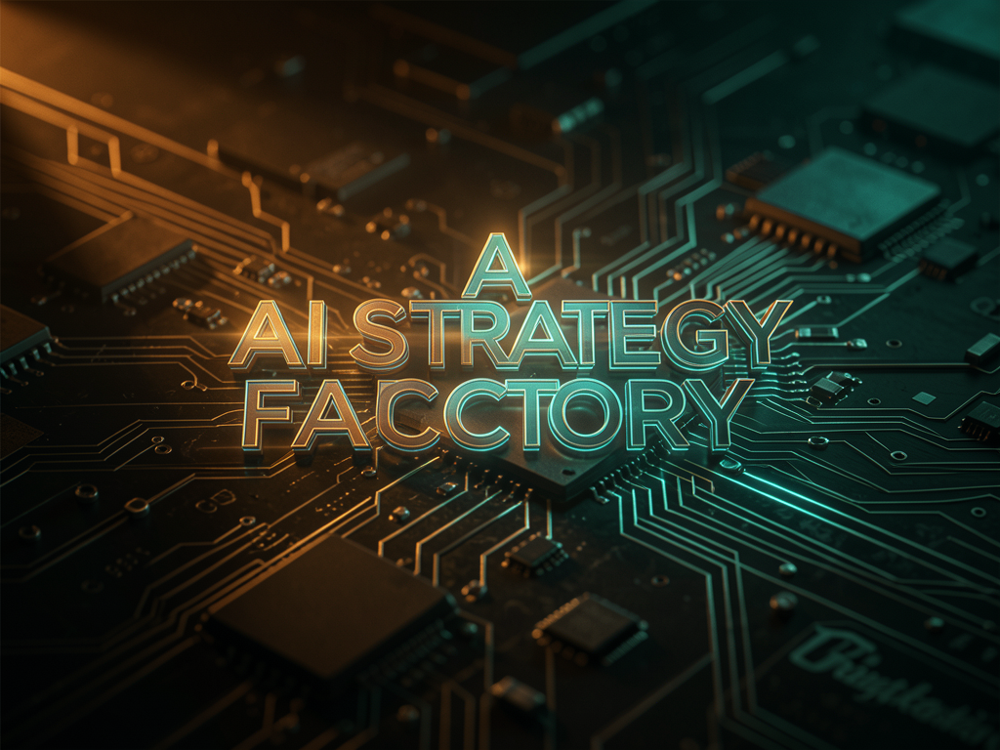

Digite o nome de uma empresa e receba, em minutos, 15 documentos estratégicos, diagramas de arquitetura, apresentações executivas e relatórios — por US$ 0,05 a US$ 0,50 por análise.

O AI Strategy Factory automatiza o trabalho que uma consultoria faria manualmente: pesquisar a empresa, analisar maturidade em IA e redigir os documentos de estratégia — do tech inventory ao roadmap de implementação.
A Perplexity AI roda de 9 a 18 queries direcionadas por análise: modelo de negócio, stack de tecnologia, concorrentes, iniciativas de IA e dores da empresa.
O Gemini 2.5 Flash sintetiza os achados em 15 templates de deliverable — do tech inventory ao glossário — com qualidade de consultoria.
Gera 2 apresentações PowerPoint, 2 relatórios Word e 5+ diagramas de arquitetura (Mermaid → PNG), tudo localmente, sem depender de serviço externo de export.
Cada análise passa por um pipeline de 3 fases, com estado salvo em disco a cada etapa — dá pra checar o status ou retomar uma análise interrompida.
Overview da empresa, stack de tecnologia, paisagem do setor, iniciativas de IA em curso, dores e prioridades estratégicas. Saída: JSON de pesquisa (research_cache.json).
Gemini gera os 15 documentos markdown e o código dos diagramas Mermaid a partir do JSON de pesquisa.
Renderização local: 2 PPTX, 2 DOCX e as imagens PNG dos diagramas — deliverables prontos para stakeholders.
Roda localmente (Windows, macOS ou Linux) com Python 3.9+ e duas chaves de API gratuitas.
Necessário pra rodar o app Flask e o CLI.
# confira a versão python3 --version
Gratuita, em perplexity.ai → Settings → API. Usada na fase de pesquisa.
# formato da chave pplx-xxxxxxxxxxxxxxxx
Gratuita, em aistudio.google.com/apikey. Usada na fase de síntese dos documentos.
# formato da chave AIzaSyxxxxxxxxxxxxxxxx
Comandos reais do repositório — sem placeholders.
Cria o virtualenv e instala as dependências (ou use python setup.py para o setup automatizado).
git clone https://github.com/promptadvisers/ai-strategy-factory.git cd ai-strategy-factory python3 -m venv venv source venv/bin/activate # macOS/Linux — no Windows: .\venv\Scripts\activate pip install -r requirements.txt
Copie o exemplo de .env e preencha com suas chaves da Perplexity e do Gemini.
cp .env.example .env # depois edite .env: PERPLEXITY_API_KEY=pplx-xxxxxxxxxxxxxxxxxxxx GEMINI_API_KEY=AIzaSyxxxxxxxxxxxxxxxxxxxxxxxxx
Sobe o Flask e abre o navegador automaticamente em http://localhost:8888, onde você digita o nome de uma empresa e acompanha o progresso em tempo real.
python -m strategy_factory.webapp # abre http://localhost:8888
O CLI cobre análise rápida, análise com contexto adicional, modo comprehensive (mais caro e detalhado), status e retomada.
python -m strategy_factory.main run "Stripe" # análise rápida, ~$0.05, 2-3 min python -m strategy_factory.main run "Stripe" --context "B2B payments, fintech" python -m strategy_factory.main run "Stripe" --mode comprehensive # ~$0.50, 5-10 min python -m strategy_factory.main status "Stripe" python -m strategy_factory.main resume "Stripe" python -m strategy_factory.main list
Cada análise grava seus arquivos numa pasta própria, por empresa, dentro de output/ (ignorada pelo git).
ls output/<empresa-slug>/ # markdown/ presentations/ documents/ mermaid_images/
Cada análise entrega este pacote completo — do tech inventory ao statement of work.
Tech inventory, mapa de dores por departamento, maturidade de IA (escala 1-5), diagramas Mermaid de arquitetura atual/futura.
Roadmap 30/60/90/180/360 dias, quick wins, comparação de vendors (build vs buy), consolidação de licenças, calculadora de ROI.
Política de uso aceitável de IA, framework de governança de dados, playbook de change management.
Biblioteca de prompts e de casos de uso por departamento, glossário, 2 apresentações PPTX e 2 relatórios DOCX (incl. statement of work).
Listadas pelo próprio projeto como frentes em aberto.